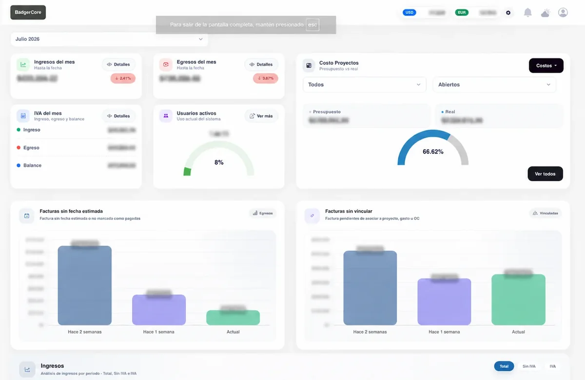
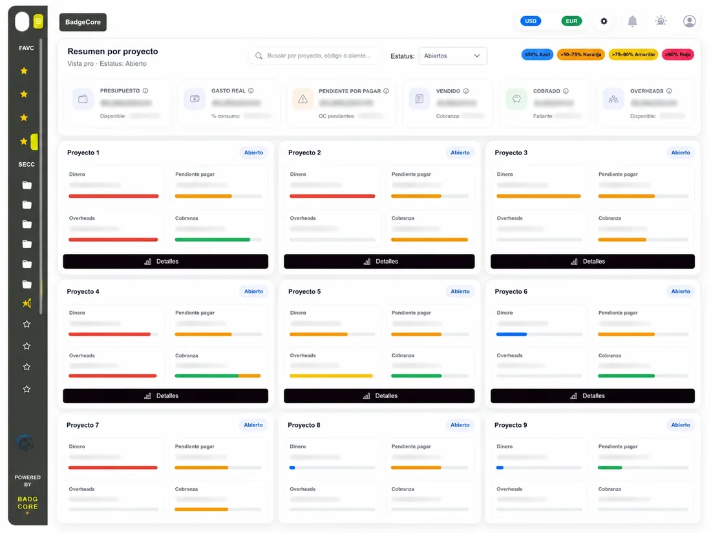
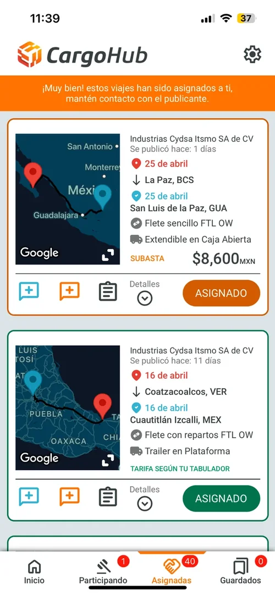
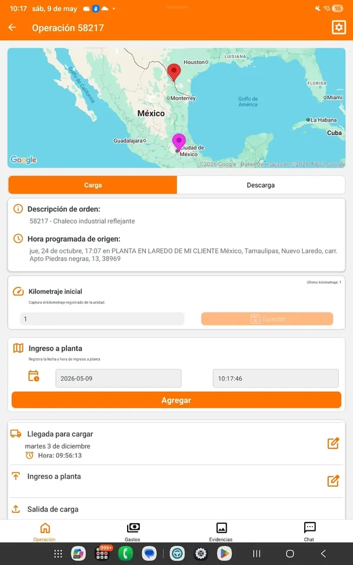
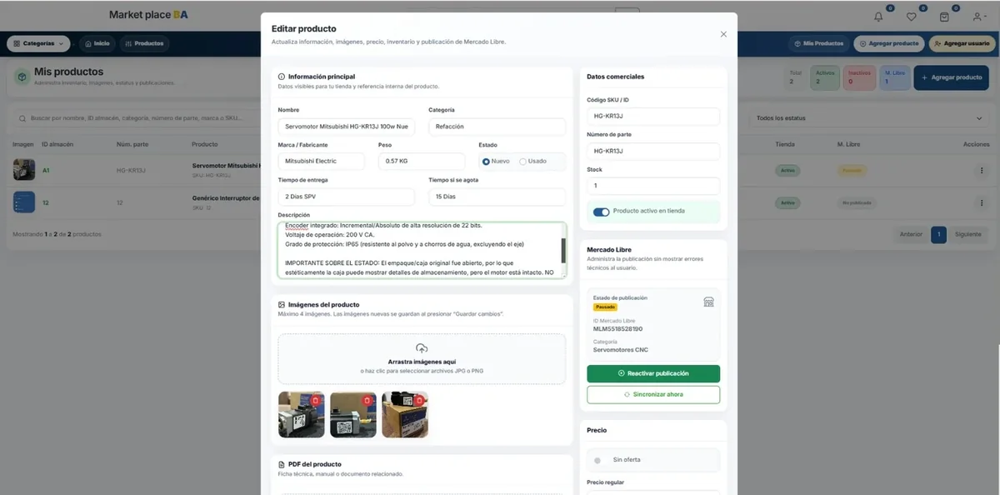
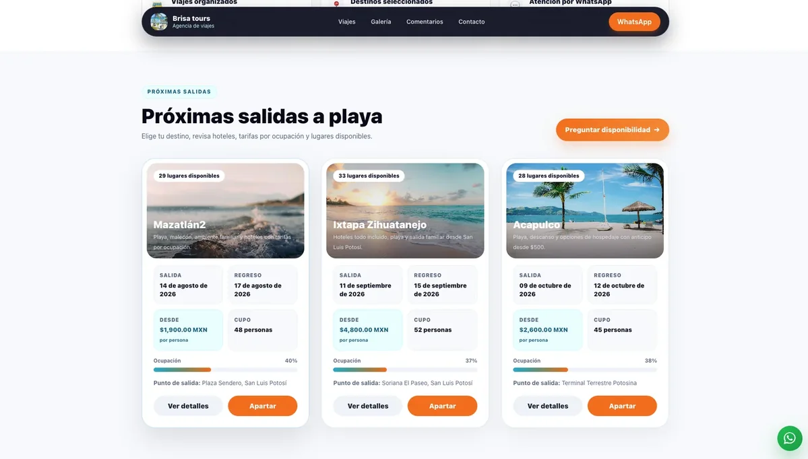
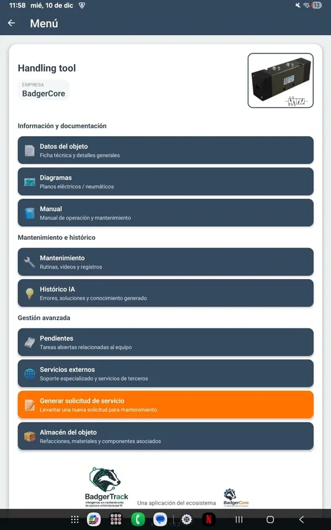
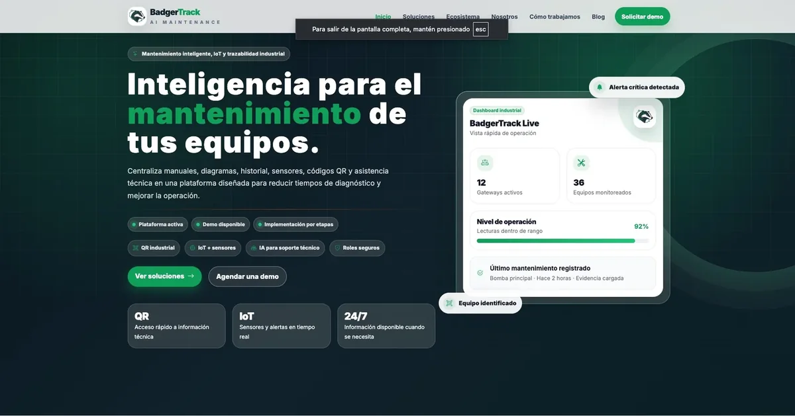

Disponible para nuevos retos y proyectos
Full Stack · Mobile · IoT · Automatización
Transformo procesos reales en software claro, útil y escalable.
Soy Uriel De León. Software Engineer con más de seis años de experiencia desarrollando plataformas web, aplicaciones móviles y soluciones para industria, logística y mantenimiento. He creado sistemas empresariales, aplicaciones publicadas en Google Play, APIs, automatizaciones y herramientas IoT, participando desde el análisis y diseño hasta el desarrollo, despliegue y mantenimiento en producción.
UI

React Native
PHP + MySQL
ERP & CRMAndroid / Google PlayReact
NativePHP & PythonIoT industrialCFDI & Carta Porte
Sobre mí
Experiencia técnica.
Me gusta convertir necesidades del día a día en herramientas que realmente faciliten el trabajo.
He desarrollado sistemas web y aplicaciones móviles para ventas, logística, mantenimiento y operación, trabajando desde las pantallas y APIs hasta reportes, documentos, GPS e integraciones.
Antes de comenzar a programar, procuro entender cómo trabaja el usuario y qué problema necesita resolver. Esto me permite crear soluciones claras, prácticas y fáciles de mantener.
Productos web
ERP, CRM, cotizaciones, compras, finanzas, dashboards, permisos, PDF y administración operativa.
Aplicaciones móviles
React Native, Kotlin y Java con GPS, cámara, archivos, notificaciones, trabajo en campo y Google Play.
Industria e IoT
Sensores, gateways, trazabilidad, etiquetas, QR, valores en tiempo real y alertas por Telegram.
Automatización
APIs, procesos programados, bots, validación de CFDI, integraciones y reducción de tareas manuales.
Proyectos seleccionados
Productos completos, desde la lógica hasta la experiencia.

BadgerCore
Plataforma empresarial integral desarrollada para centralizar y automatizar los procesos de Badger Automation. Incluye CRM, cotizaciones, clientes y contactos, gestión de proyectos, compras, facturación con sincronización automática del SAT, ingresos, egresos, almacén, viáticos, órdenes de trabajo, pendientes, reportes y paneles de análisis.
Flujos por rolesDashboardsPDF y correos

CargoHub
Aplicación móvil de logística que desarrollé desde cero. Permite que las empresas publiquen viajes de carga y que los conductores envíen sus mejores ofertas para competir por cada servicio.

Conductores
Aplicación móvil para operadores de transporte que centraliza la gestión de viajes, evidencias, documentos, gastos, ubicación y Carta Porte. Fue desarrollada para agilizar la comunicación entre conductores y el equipo logístico, permitiendo consultar y actualizar cada operación desde el celular.

MRO
Plataforma web para administrar y comercializar herramientas, refacciones y materiales excedentes. Permite controlar productos, inventario, pedidos y publicaciones, además de sincronizar la información con Mercado Libre.

Viajes
Sistema para administrar viajes, pasajeros, reservaciones, abonos, saldos, comprobantes, PDF y galería desde un panel central.

BadgerTrack
Aplicación móvil desarrollada para gestionar órdenes de trabajo, servicios, mantenimientos y pendientes asociados a maquinaria o equipos. Permite registrar evidencias, consultar documentos, generar reportes en PDF y dar seguimiento al estado de cada actividad desde campo.

Monitoreo IoT industrial
Ecosistema de gateways y sensores para leer variables de maquinaria, consultar históricos, monitorear valores en tiempo real y recibir alertas en una app nativa o Telegram.
Sensores y gatewaysAlertas
remotasHistórico
Casos industriales
Trazabilidad y calidad conectadas con el proceso de planta.
Proyectos donde el software debía identificar piezas, conservar evidencia y entregar información clara a calidad, producción o proveedores.
FORVIA · Faurecia
08
Respaldo digital de piezas OK / NOK
OKPieza validadaRegistro respaldado
NOKPieza rechazadaMotivo documentado
Vista proveedorHistorial y evidencia
Sistema para registrar la clasificación de cada pieza, conservar el respaldo de resultados OK/NOK y mostrar la información al proveedor mediante una interfaz web.
01Registro→02Clasificación→03Respaldo→04Consulta
DRÄXLMAIER
09
Trazabilidad de piezas con código único
DX-26-004821Pieza identificadaLínea 03 · Estación
08
ZPLZebra
Sistema donde cada pieza recibe un código único y una etiqueta para rastrear dónde se fabricó, su información de proceso y su historial de identificación.
01Código único→02QR /
ZPL→03Impresión Zebra→04Trazabilidad
Otros desarrollos
Soluciones adicionales que amplían mi experiencia.
Automatización CFDI
Descarga automática del SAT, metadata, XML/PDF, validación y procesamiento programado.
Smartwatch y mediciones
Captura de mediciones desde wearable y sincronización con aplicación móvil.
Seguimiento en segundo plano
Geolocalización, evidencias y trazabilidad de operación móvil.
Telegram y Bitrix24
Bots, notas, alertas, órdenes de compra e integraciones con procesos internos.
Experiencia técnica
Tecnologías y herramientas que domino para diseñar, desarrollar, integrar y mantener productos utilizados en operaciones reales.
JavaScriptTypeScriptReactHTML5CSS3jQueryChart.js
React NativeAndroid
StudioKotlinJavaWear OSGoogle Play Console
PHPPythonC#MySQLSQL
ServerREST APIsJSONAuthentication
CFDICarta PorteSATTelegram
BotsBitrix24GPSIoTFirebaseZPL
Experiencia
Más de seis años convirtiendo procesos operativos en soluciones digitales.
Dic 2022 — Actualidad
Software Engineer
Badger AutomationERP Badger, BadgerCore, BadgerTrack, CRM, cotizaciones, compras, CFDI, Carta Porte, finanzas, dashboards, GPS, mantenimiento, QR, IoT, smartwatch, Telegram y Bitrix24.
Feb 2022 — Ago 2025
Full Stack Developer · Freelance
LogisticsHubRediseño de plataforma, CFDI, Carta Porte, APIs, CargoHub y Conductores, incluyendo desarrollo móvil, versiones y publicación en Google Play.
Jun 2019 — Dic 2022
Software Developer
Integra AutomationPlataformas web, Moodle, sistemas administrativos, proyectos de trazabilidad industrial y aplicación de realidad aumentada para Volkswagen.
Contacto
¿Hablamos?
Estoy abierto a oportunidades profesionales, proyectos freelance y colaboraciones de desarrollo.